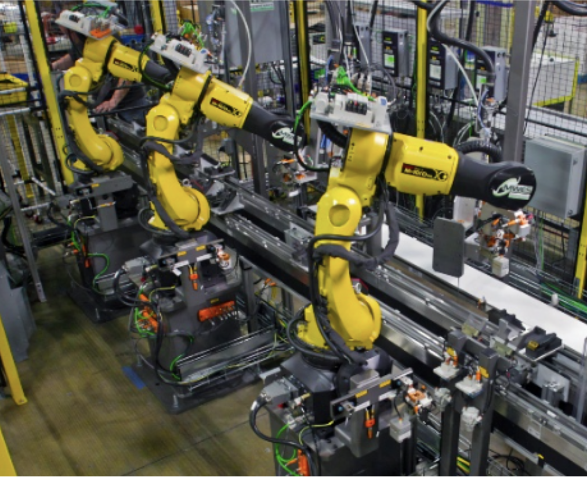
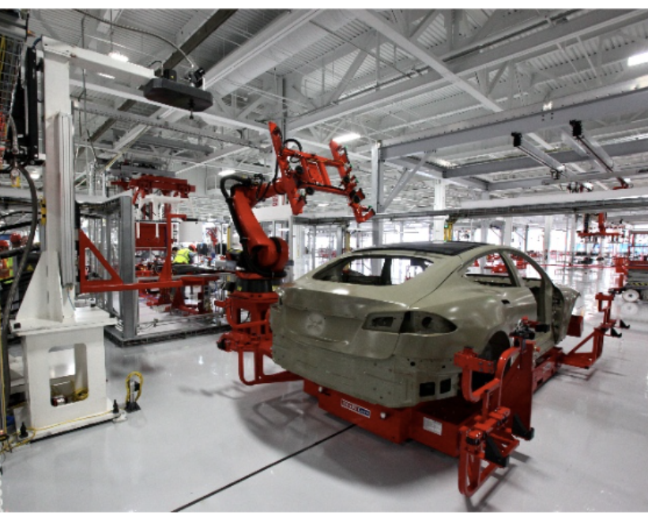

Engineering • Automation
The Automated Manufacturing Line
When you look around you, from the lamp in your room to the car parked outside, do you ever wonder where this was made, and how there are so many of them?
The answer to that is the manufacturing line. And nowadays, in many cases, it’s no longer humans on these lines. It has shifted towards large machines, with robotic arms that are more flexible and faster than you could imagine, capable of producing multiple parts every minute. These machines are now what dominate modern manufacturing.
At first, you might be thinking, how does that even work? And why is this something we don’t want humans to do?
Well, the reality is that humans shouldn’t really be doing jobs that are this boring, monotonous, and repetitive. Instead, human effort is better used in roles that require thinking, problem-solving, and creativity. Manufacturing lines, especially automated ones, are built around simple, repeated processes, which makes them ideal for machines.
Most automated manufacturing systems follow a similar structure. The first stage often involves scanners and sensors, which check barcodes and measure parts to ensure they meet the required specifications. After that, the parts move into tooling stages, where they are assembled, drilled, screwed together, or fitted with components like hinges. In some cases, there are also stages where glue or other materials are applied, all done automatically with high precision.

These processes are connected using conveyor belts, which move parts from one machine to another, keeping everything aligned and continuous. Additional sensors are used throughout the system to check tolerances and detect any errors or faults in real time. Although the system is largely automated, there are still human testers involved at certain points to make sure everything is working as expected.
Another interesting aspect of modern manufacturing is the use of digital models. Engineers often create a digital version of the entire production line, allowing them to run simulations and test changes before applying them in real life. This helps ensure that any adjustments won’t negatively affect the quality or output of the products.
This brings us to a bigger question: is it actually a bad thing that humans are being replaced by automated machines?
In many ways, it isn’t. These systems allow factories to operate continuously, with a level of precision that is far beyond what a human could consistently achieve. Machines can run almost constantly, with availability as high as around 96%, only stopping for maintenance or repairs. Humans, on the other hand, naturally require breaks, rest, and time away from work.
As Bill Gates explains, “automation applied to an efficient operation will magnify the efficiency.” However, he also points out that the opposite is true. If automation is applied to an inefficient system, it will simply make that inefficiency happen faster. This is why manufacturing engineers focus on optimising processes before automating them, especially when those processes are already simple, repetitive, and well-structured.
This shift towards automation also reflects a wider change in the types of work humans do. As Amber Rudd stated, “automation is driving the decline of banal and repetitive tasks”. Instead of focusing on manual production, more people are moving into roles that involve research, development, and advanced problem-solving. These are often described as part of the quaternary sector, compared to traditional manufacturing roles in the primary sector.
Another important idea is that automation tends to grow rapidly once it begins. It’s not something that happens slowly or in isolation. As Mark Cuban put it, “automation will automate automation.” Once one part of a system is automated, it often leads to further improvements and more automation across the entire process, eventually becoming the industry standard.
Some experts even describe this as part of a much larger shift. Gary Coleman, a Deloitte industry advisor, has referred to this period as “the Fourth Industrial Revolution”, and suggests that it is still in its early stages. This shows that what we are seeing now is likely only the beginning of how advanced these systems could become.

To understand how powerful automated manufacturing lines can be, we can look at the automotive industry. Companies like Tesla have built highly automated production systems, where multiple production lines work simultaneously to produce the same vehicles at scale. These systems include specialised robots that not only assemble parts but also check quality and ensure that every car meets strict standards.
At the same time, companies like Ford, who were among the first to introduce large-scale production lines, have continued to refine and improve these systems over time. Their ability to mass-produce vehicles with consistency and accuracy has allowed them to meet demand reliably and remain competitive in the global market.
Overall, automated manufacturing lines are not just about replacing human workers. They are about creating systems that can produce large quantities of products efficiently, accurately, and continuously. In many ways, modern manufacturing is less about individual tasks, and more about designing systems that can carry out those tasks better than ever before.